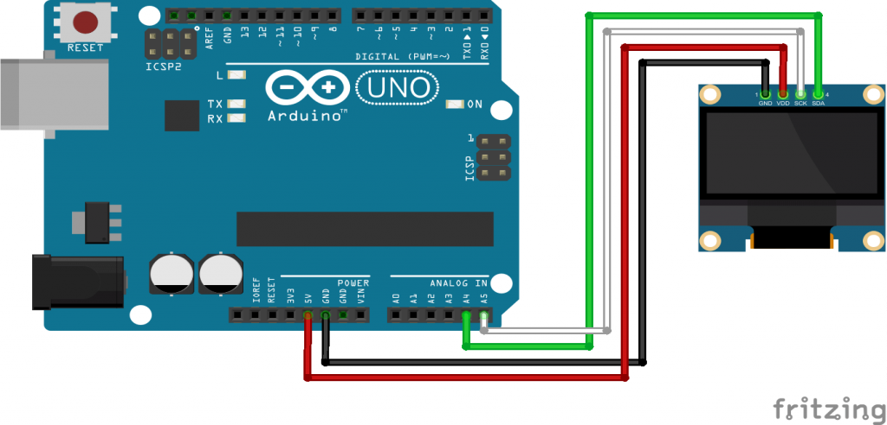

An organic light-emitting diode (OLED or organic LED), also known as organic electroluminescent (organic EL) diode,[1][2] is a light-emitting diode (LED) in which the emissive electroluminescent layer is a film of organic compound that emits light in response to an electric current. This organic layer is situated between two electrodes; typically, at least one of these electrodes is transparent. OLEDs are used to create digital displays in devices such as television screens, computer monitors, and portable systems such as smartphones and handheld game consoles.
Specifications
Display Technology:OLED (Organic LED).Resolutions 128x32, 128x64 pixels
Operating Voltage: 3.3V – 5V
MCU Interface: I2C / SPI
Other Interfaces : 6800/8000 series compatible Parallel Interface,I2C interface,Serial Peripheral Interface
Operating Current: 20mA max
Viewing Angle:160°
Number of Character Rows:7
Characters Per Row:21

| On Sensor | On Raspberry | On Arduino |
|---|---|---|
| Vcc | Physical pin of 3.3V (pin 1 or 2) | Power supply 5V |
| Ground(GND) | Physical Ground Pin | Ground (GND) |
| SDA | Physical pin 1 | A4 |
| SCK | Physical pin 2 | A5 |
It can be worked with
Working of DHT with Arduino Uno

#include < wire.h>
void setup()
{
Serial.begin (115200);
while (!Serial)
{ }
Serial.println ();
Serial.println ("I2C scanner. Scanning ...");
byte count = 0;
pinMode(13,OUTPUT);
digitalWrite(13,HIGH);
Wire.begin();
for (byte i = 1; i < 120; i++)
{
Wire.beginTransmission (i);
if (Wire.endTransmission () == 0)
{
Serial.print ("Found address: ");
Serial.print (i, DEC);
Serial.print (" (0x");
Serial.print (i, HEX);
Serial.println (")");
count++;
delay (1);
}
}
Serial.println ("Done.");
Serial.print ("Found ");
Serial.print (count, DEC);
Serial.println (" device(s).");
}
void loop() {}
...
...